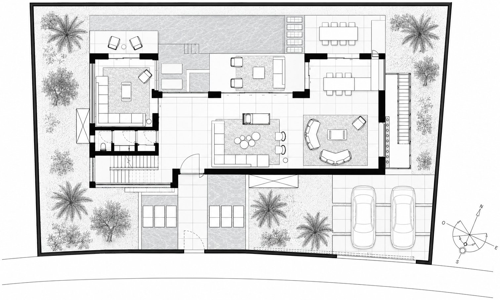
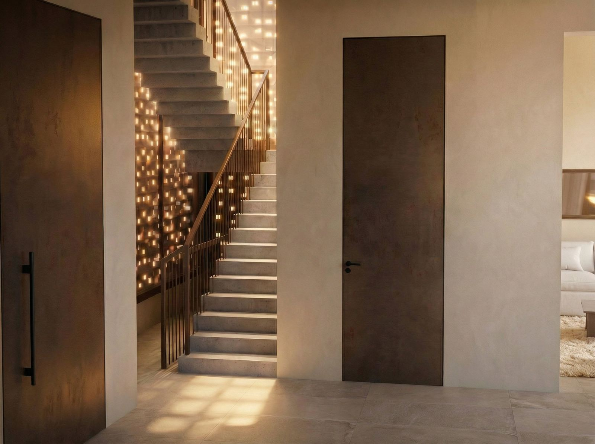
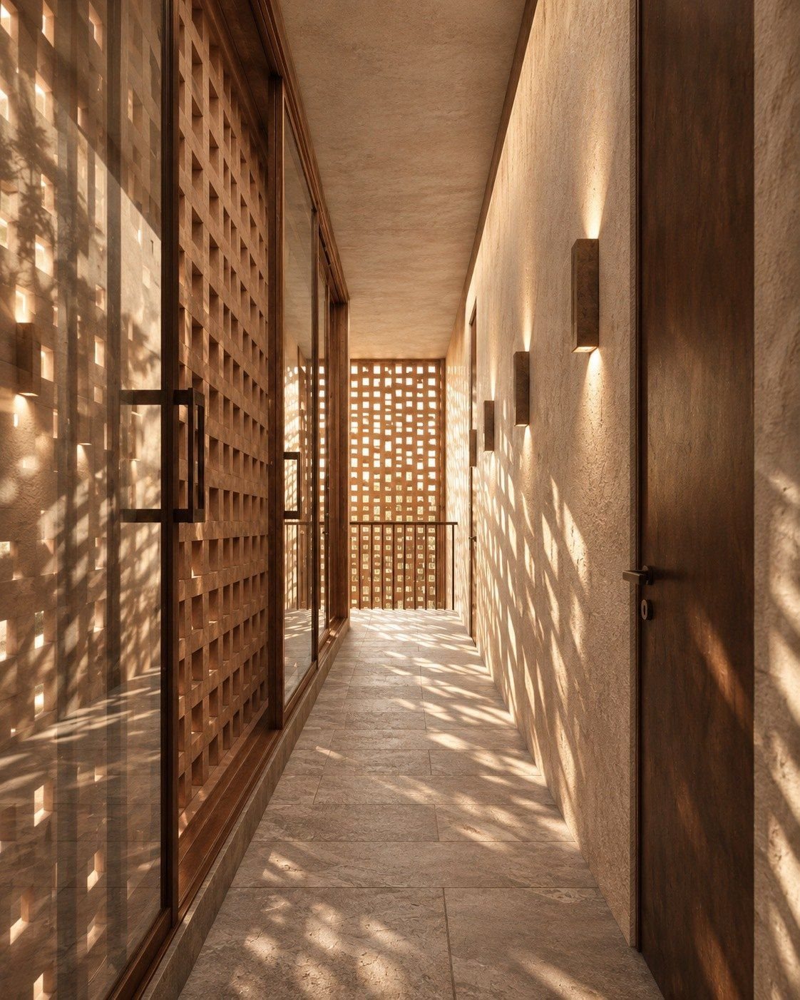
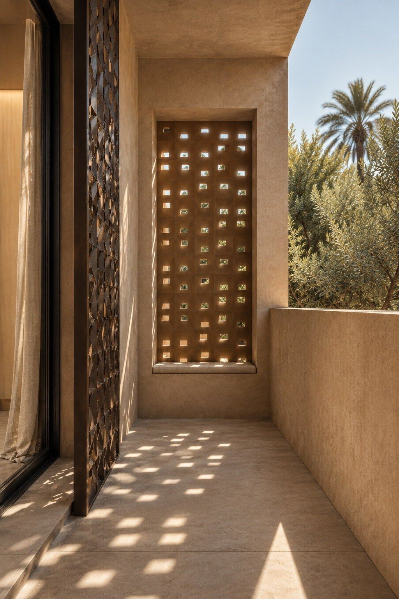

Architecture
Villa L'Intervalle
Entre deux pièces, il y a une troisième chose.
La Villa L'Intervalle n'est pas une maison, c'est une respiration. Elle ne s'impose pas, elle relie. Elle ne reproduit pas une image de Marrakech : elle en reprend les sensations. L'épaisseur des murs, l'ombre, les seuils, la terre, la lumière filtrée, le rapport intime entre dedans et dehors.
L'intervalle n'est pas ce qui reste quand on a dessiné les pièces. C'est un seuil d'ombre avant la lumière, une circulation, un cadrage sur l'horizon, la respiration plantée entre la maison et sa clôture. Chaque lieu y réunit un usage, une sensation et un rapport au dehors.
- Le mur devient un lieu.Il est épais. Il fabrique l'ombre, accueille une assise, une niche, un encadrement.
- Ce qui n'est pas cadré disparaît.Chaque ouverture vise quelque chose : un morceau de ciel, un arbre, un horizon.
- La maison se découvre par séquences.Des seuils successifs ralentissent le pas.
- Le sous-sol est habité.La lumière y descend par les claustras, les cours anglaises et les puits de lumière.
- Lieu
- Marrakech
- Programme
- Maison individuelle, R+1 sur sous-sol
- Matière
- Terre, claustras de terre cuite
- Statut
- Projet en cours



